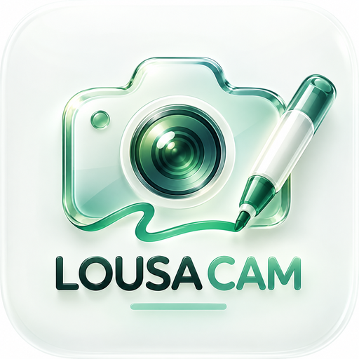

Galeria Lousa Cam
Sua experiência, suas preferências. · Role para ver todas as opções
Ative a câmera e o microfone para usar a lousa sobre a imagem. Para melhor experiência no iPhone, use o aparelho na horizontal.